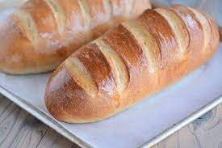

Bread

Description
Brød er en fin rett å lage fordi det metter mange
I tillegg er ferskt brød digg og det er også en ting til jeg kan legge til i dette prosjektet
Ingredients
- Mel
- Vann
- Salt
- Gjær
- Solsikkefrø
Steps
- Bland det tørre
- Tilsett gjær
- Tilsett vann
- Elte
- La heve på benken i 2 timer
- Elte ut til to brød
- Legg på rist
- Steke i stekeovnen på 200 grader i 20 minutter